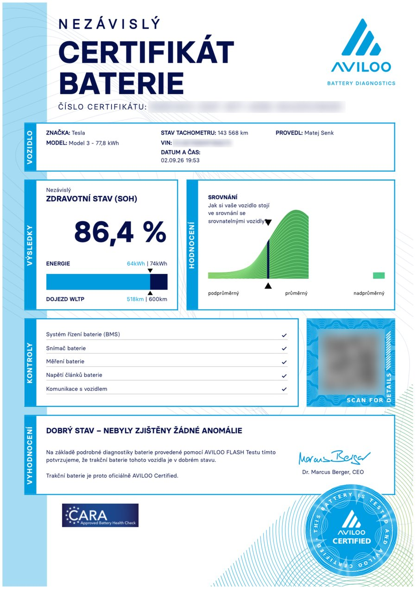
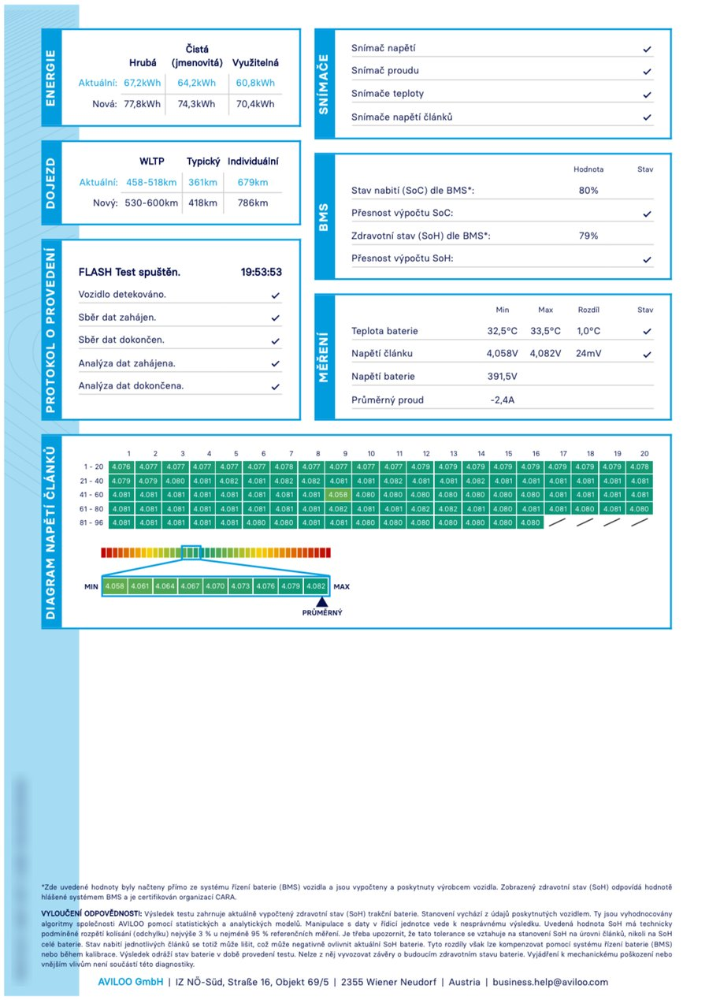

Certifikát AVILOO FLASH Test
Nezávislý a podrobný audit stavu baterie. První strana dává rychlý přehled, druhá podrobné technické hodnoty.
Ukázka je skutečný certifikát z testu Tesla Model 3 Long Range (143 568 km). VIN, číslo certifikátu a QR kód jsou z důvodu ochrany údajů rozmazané.
Strana 1: Přehled
- Stav baterie (State of Health, SoH)
- Stav baterie v okamžiku testu. Vypočítá ho statistický model AVILOO z dat tisíců srovnatelných vozů – zohledňuje nájezd, stáří a signály z BMS.
- Kapacita a dojezd
- Porovnání aktuálně dostupné energie (kWh) a reálného dojezdu s hodnotami nového vozu (WLTP).
- Porovnání s trhem
- Graf (Gaussova křivka), jak si baterie stojí ve srovnání s vozy stejného modelu a stáří.
- Oficiální hodnocení
- Krátký verdikt (např. „Excellent Health – No Abnormalities Detected“), podpis vedení AVILOO a unikátní QR kód pro ověření pravosti.
- Základní diagnostika
- Rychlý zelený/červený ukazatel funkčnosti BMS, senzorů a komunikace s vozem.

Strana 2: Technické detaily
- Senzory
- Kontrola senzorů napětí, proudu a teploty – odhalí vadné senzory nebo neobvyklé chování článků.
- BMS
- Stav nabití (SoC) a stav baterie (SoH) tak, jak je hlásí samotný vůz, bez výpočtů AVILOO.
- Měření
- Naměřené fyzikální hodnoty – teplota baterie, napětí sady, průměrný proud – s upozorněním na nebezpečné extrémy a výkyvy.
- Protokol průběhu
- Záznam všech kroků testu od začátku do konce.
- Napětí článků
- Graf napětí každého článku. Velké rozdíly mezi nejvyšší a nejnižší hodnotou ukazují na nevyváženost, stárnutí nebo vadný článek. Ideálně jsou všechny hodnoty blízko sebe.
